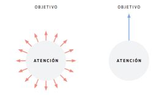

Sabiduría:
Podríamos resumir la virtud de la sabiduría como la capacidad de observar la realidad de manera objetiva y racional. En un mundo complejo y confuso, la claridad nos da poder.
La sabiduría es también crucial para diferenciar el bien del mal, y para distinguir lo que está bajo nuestro control de lo que está fuera de él.
Coraje:
Coraje no es la ausencia de miedo, sino hacer lo correcto a pesar del miedo.
Con frecuencia, enfrentar desafíos que tememos es la única forma de desarrollar cualidades que queremos.
Muchos asumen que alcanzarán el estado de nirvana psicológico cuando resuelvan todos sus problemas, ligando su paz interna a la ausencia de trabas externas. Es un error.
Los problemas son parte de la vida, y cuando resuelvas unos aparecerán otros.
El objetivo de la vida no es eliminar todos nuestros problemas, sino actuar correctamente y mantener la paz mental a pesar de su existencia.
Justicia:
No hay tranquilidad sin buena conciencia.
Disciplina:
En vez de obsesionarnos con el resultado debemos poner nuestra atención en los hábitos, pensar menos en el resultado lejano y más en nuestro comportamiento inmediato.
La buena vida tiene más que ver con acciones que con sensaciones.
El destino guía a quien lo acepta, y arrastra a quien lo rechaza.
Los estoicos proponen centrar nuestros pensamientos y esfuerzos en lo que podemos controlar, ignorando todo lo demás, para evitar un sufrimiento innecesario.
Para explicar la relación que recomendaban tener con nuestro destino, los estoicos usaban la analogía de un perro atado a una carreta.
La carreta estaba guiada por animales mucho más fuertes que él, por lo que el perro tenía dos únicas opciones: 1) Caminar junto al carro y aprovechar la longitud de su correa para ir explorando todo aquello a su paso. 2) Resistirse al avance del carro clavando sus patas en el suelo.
En ambos casos el perro llegará al mismo destino, pero la experiencia del viaje será muy distinta. Si elige la primera opción pasará un tiempo agradable y tranquilo, disfrutando incluso del camino. En el segundo caso sufrirá dolor y frustración. En nuestra mano está la decisión.
El estoicismo nos recuerda que tenemos control total sobre nuestras acciones.
Es evidente la relación entre pensamientos, emociones y comportamientos. Estos pensamientos distorsionados generan emociones exageradas y finalmente comportamientos equivocados.
Los estoicos llamaban a las primeras impresiones que recibíamos phantasias, que a veces eran un buen reflejo de la realidad pero con frecuencia no.
Hay dos cosas que provocan el miedo:
Cosas que realmente quieres evitar. Por ejemplo, te puede dar miedo lesionarte o fracasar en tu nuevo negocio.
- En estos casos debes aprovechar el miedo para tomar medidas preventivas.
- Investiga, analiza, habla con personas que han hecho lo que tú quieres hacer. Pide su consejo.
- Una vez hayas tomado las medidas oportunas para reducir la ocurrencia de aquello que temes, el miedo ya no cumple ninguna función.
Cosas que debes hacer. En estos casos, la evitación no es buena opción; evitar el miedo solo te empequeñece. Por ejemplo puede ser miedo a la incomodidad de entrenar o de pasar hambre, a ser el “raro del grupo” o a hablar en público. Debes prepararte para actuar.
- Huimos de cosas que debemos hacer porque pensamos que son más difíciles de lo que realmente son.
- Las cosas que nos asustan al principio pierden su fuerza al exponernos a ellas con frecuencia.
- El miedo se reduce con cada exposición, pero debes elegir la dosis adecuada. Una exposición excesiva demasiado pronto podría reforzar el miedo.
- Si no te ves capaz, piensa en cómo alguien que admiras lidiaría con esa situación.
La acción es el antídoto del miedo:
La acción reduce la incertidumbre, y trae la mente del futuro al presente. Pones la mente en lo que puedes controlar.
Cuanto más clara e inspiradora sea tu visión menos impacto tendrá el miedo.
Es más importante hacer algo primero sobre tu propia ira, y después sobre su causa.
- Si te enfadas le estás dando poder a quien te quiere dañar, le estás permitiendo alterar tu estado mental. No cedas a nadie ese poder.
- Ante un ataque malintencionado, evalúa si realmente el agresor merece una respuesta.
- Si decides que la ofensa requiere respuesta, actúa con firmeza pero sin ira. Sé asertivo a la hora de exigir un trato justo. Oponte a los intentos de otros por controlarte o bloquear tus acciones. Con tranquilidad pero con determinación. Quien responde a la provocación con justicia demuestra más fortaleza que quien se deja llevar por la ira. No respondas como te atacan.
Clasifica las cosas en:
- Buenas
- Malas
- Indiferentes
· preferibles -deseables
· no preferidos -no deseables
No esperes a tener un plan perfecto para dar el primer paso.
Actúa a pesar de la emoción.
Empieza pequeño.
La atención que dedicas a cualquier acción debe corresponder con su valor.

Eudaimonia: desarrollar tu potencial y alcanzar la felicidad, cerrando la brecha entre lo que eres y lo que podrías llegar a ser. El verdadero estoico no es real, es simplemente un ideal. En momentos difíciles, los estoicos contemplaban esta imagen idealizada y se preguntaban qué haría una persona sabia. Nunca llegaremos por tanto a ser verdaderos estoicos, pero al intentarlo nos convertiremos en versiones mejores de nosotros.
Tu estatus socioeconómico es indiferente. Tu valía se mide realmente por tus acciones.
Una de las mejores formas de lograr perspectiva es saliendo a la naturaleza. Al lado de grandes montañas o inmensos océanos nuestros problemas parecen reducir su tamaño. La naturaleza pone nuestra propia existencia en perspectiva, y nos damos cuenta de que somos una pequeña parte de algo mucho más grande.
Esto no significa por supuesto que nuestros problemas sean irrelevantes, tan solo que a veces nos quedamos atrapados en nuestras interpretaciones de los eventos, perdiendo de vista el contexto.
Pasar al papel las cosas que te preocupan reducirá su carga mental y te ayudará a encontrar soluciones.
Si por un pinchazo de camino al trabajo te alteras más de la cuenta y estropeas una presentación importante en la oficina, tú eres el causante, no el pinchazo.
Visualiza la transitoriedad de todas las cosas.
Todos queremos que nuestra vida refleje una buena historia, pero las buenas historias requieren momentos difíciles.
-'Invicto'. Marcos Vázquez